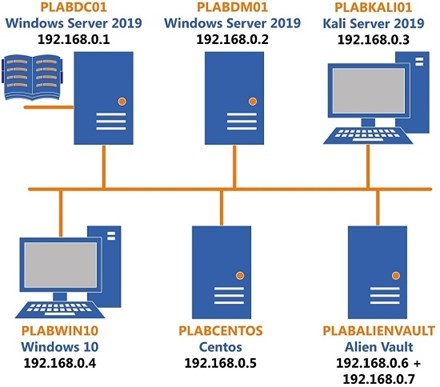
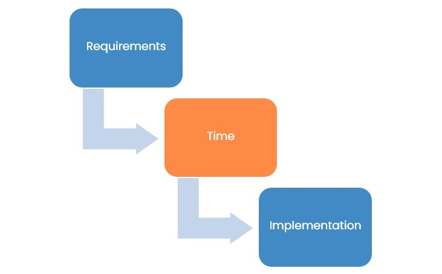
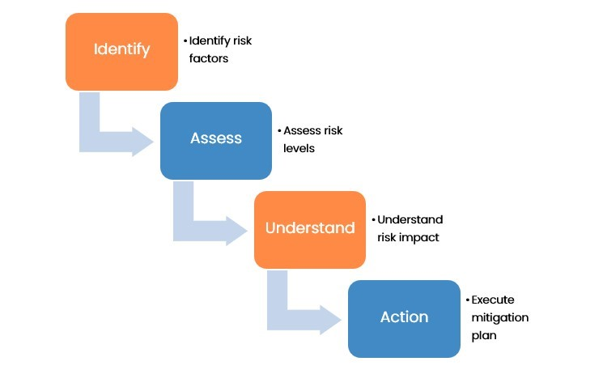
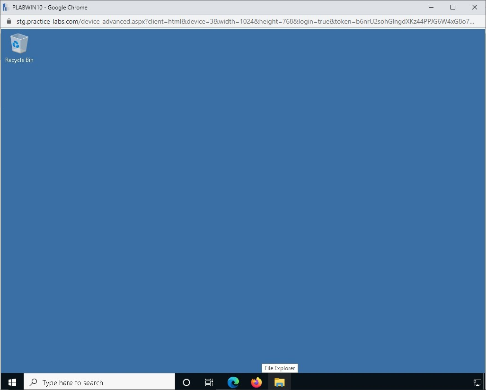
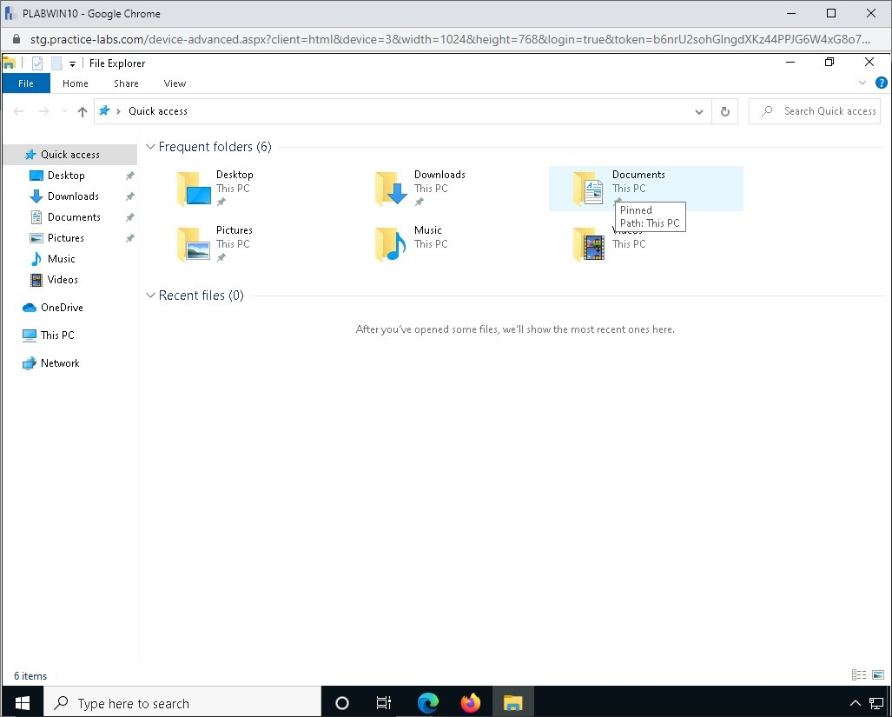
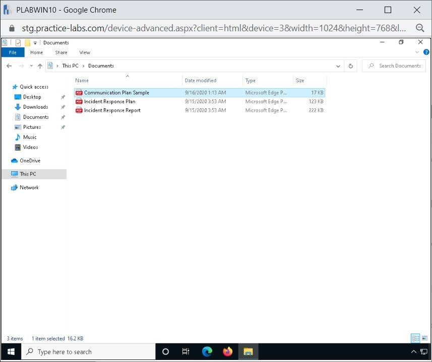
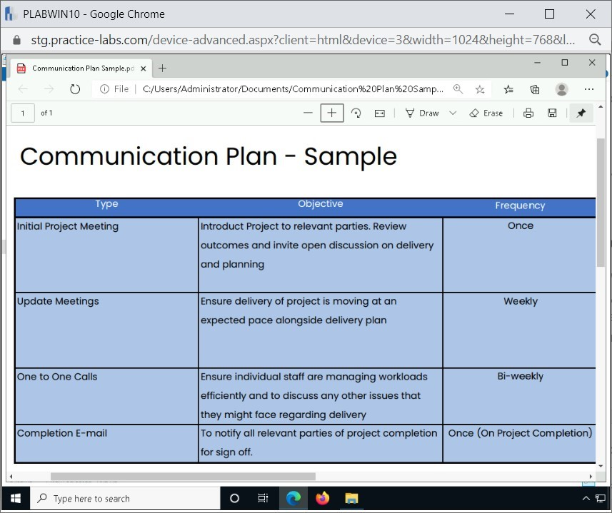

Introduction
9beca326-b493-4b0e-b3dc-d7dfb77df3c9
Welcome to the Frameworks, Controls, Policies, and Procedures Practice Lab. In this module, you will be provided with the instructions and devices needed to develop your hands-on skills.
dc640c20-9434-45ea-b7c2-6d4d6a196bfc
Learning Outcomes
In this module, you will complete the following exercises:
- Exercise 1 - Frameworks, Controls, Policies, and Procedures
After completing this module, you will have further knowledge of:
- Frameworks
- Policies and Procedures
- Security Control Categories
- Audits and Assessments
Exam Objectives
The following exam objectives are covered in this lab:
- 5.3 Explain the importance of frameworks, policies, procedures, and controls
Note: Our main
focus is to cover the practical, hands-on aspects of the exam
objectives. We recommend referring to course material or a search engine
to research theoretical topics in more detail.
Lab Duration
It will take approximately 1 hour to complete this lab.
89816a20-56f2-42c5-bfa0-46f11f2986ba
Help and Support
For more information on using Practice Labs, please see our Help and Support page. You can also raise a technical support ticket from this page.
Click Next to view the Lab topology used in this module.
d2c53300-f951-45a9-9aa4-3d4ecae69e11
Lab Topology
During your session, you will have access to the following lab configuration.

Depending on the exercises, you may or may not use all
of the devices, but they are shown here in the layout to get an overall
understanding of the topology of the lab.
- PLABDC01 - (Windows Server 2019 - Domain Server)
- PLABDM01 - (Windows Server 2019 - Domain Member)
- PLABKALI01 - (Kali Linux 2019 - Linux Kali)
- PLABWIN10 - (Windows 10 - Domain Member Workstation)
- PLABCENTOS - (Centos 8 Linux - Stand-alone Linux Server)
- PLABALIENVAULT - (Alien Vault Linux Security Management Platform)
Click Next to proceed to the first exercise.
<
Home |
README >
CompTIA Cybersecurity Analyst (CySA+) Practice Labs
Exercise 1 - Frameworks, Controls, Policies and Procedures
Security within an organization is a combination of
frameworks, security controls, policies, and procedures. All of these
components put together to form a strong security posture within the
organization.
In this exercise, you will learn about the frameworks,
security controls, policies, and procedures. In this exercise, you will
learn about risk-based and prescriptive frameworks.
Learning Outcomes
After completing this exercise, you will have further knowledge of:
- Frameworks
- Policies and Procedures
- Security Control Categories
- Audits and Assessments
Your Devices
You will be using the following device in this lab. Please power this on now.

- PLABWIN10 - (Windows 10 - Domain Member Workstation)
Frameworks
A framework or a security framework defines a set of
processes and procedures to help an organization implement a set of
security controls, which are meant to reduce the security risks. A
framework can be specific to an industry, or it could be generalized to
meet more generic requirements. For example, PCI-DSS is a
regulatory framework for an organization that deals with credit or debit
card payments on the Internet. This is specific to the credit card
industry. On the other hand, ISO 27001 is a more general regulatory framework that can help any organization of any size. It helps an organization to define an Information Security Management System (ISMS).
The whole intent of a framework is to use the
pre-defined guidelines. When you use a specific framework, you do not
need to create the basic structure of policies and processes. However,
it is important to note that a framework can always be customized to
meet an organization’s needs.
There are several frameworks available in the IT
industry, and most of them are designed with the security aspect in
mind. Broadly categorizing, there are two types of frameworks, prescriptive and risk based.
Prescriptive Framework
Prescriptive frameworks define a specific direction or
a series of steps, which can be in the form of procedures. The
framework contains a series of steps that must be followed to meet a
specific requirement. The prescriptive frameworks are designed with two
goals in mind:
Prescriptive frameworks bring in
standardization and, therefore, can be difficult to implement. They are
large frameworks, and the cost to implement them can also be high. In
totality, the prescriptive frameworks are one-size fit all.
Prescriptive frameworks, because they offer
standardization, they follow the template-based approach and provide
instructions to solve a specific issue or problem. Waterfall methodology can be considered as a prescriptive framework as it provides detailed steps as to what to do and when to do.
Figure
1.1: Example of the Waterfall model, which shows three headings,
Requirements, Time and Implementation and shows that they lead into one
another.
Risk-based Framework
Unlike Prescriptive frameworks, Risk-Based frameworks
are used to identify specific risks in systems. Once the risks are
identified, you can design the controls to mitigate risks.
The Risk-Based frameworks follow a series of
steps. The first step starts by identifying the risk factors and then
moves on to assess the level of risks. After you assess the risks, you
need to understand the impact of specific risk and build a mitigation
plan accordingly.
Figure
1.2 Diagram showing the mitigation plan; Identify risk factors >
Assessing risk levels > Understanding the risk impact and Execute the
mitigation plan.
Risk-Based frameworks require less extensive
documentation and are typically less costly and time-consuming. This is
because you are more inclined to find a risk rather than how a task can
be accomplished.
A risk-based framework helps you achieve the following:
- Perform risk identification and risk assessment
- Define the level of risk tolerance
- Define a score to the risk
- Define a response to the risk
Several Risk-Based frameworks help an organization manage and assess risks:
- Operationally Critical Threat, Asset and Vulnerability Evaluation (OCTAVE)
- Factor Analysis of Information Risks (FAIR)
- National Institute of Standards and Technology's Risk Management Framework (NIST RMF)
- Threat Agent Risk Assessment (TARA)
Policies and Procedures
A policy is a set of principles or guidelines that
must define an objective for the organization. Procedures, on the other
hand, are derived from the policies and are set of steps that must be
performed to meet a goal or objective. For example, creating a user
account in the organization’s domain is a procedure that must be
followed.
An organization in any kind of industry will have some
sort of policies and procedures. In the context of security, the
organization will have policies and procedures related to security to
ensure the protection of their critical assets. For example, a data
security policy defines how you need to secure your data by applying
encryption. An access control policy defines how access is granted to
the users in your organization.
In most cases, organizations have some sort of Information Security Management System (ISMS)
in which they define various policies and procedures. However, it is
important to note that the policies and procedures must be defined to
meet one or more specific business objectives.
Code of Conduct/Ethics
Several organizations will implement ISMS to establish policies and procedures, which define the security controls for protecting the infrastructure. ISMS also
contains the policies that define how users should comply with the
defined rules and guidelines. Organizations mostly require the users to
sign the code of conduct policy, which defines how the users should work
with the existing infrastructure and the type of conduct that they
should follow when dealing with the information.
The code of conduct needs to be signed by every
employee in the organization. This includes the leadership of the
employee at the bottom of the hierarchy. It is important to understand
that the code of conduct is the responsibility of every employee in the
organization. The employees must read the code of conduct policy and
also sign it to with the proper understanding of the contents mentioned
inside it. Needless to say that there will be users who do not comply
with it. In case of any non-compliance, the matter can be escalated
accordingly.
Acceptable Use Policy (AUP)
An Acceptable Use Policy (AUP) can also
be known as an acceptable usage policy or fair use policy. The core
intent of this policy is to define guidelines on how the users must use
the systems, network, E-mail, and the Internet within the organization.
An AUP can be used by different entities, such as:
- Corporations
- Businesses
- Universities and schools
- Internet Service Providers (ISPs)
- Website owners
In an organization, when a new user joins, they need
to sign the AUP. After the signing of the AUP, access to the system and
network is granted to the user. The AUP also mentions the consequences
that can be imposed on the user if they violate any guidelines mentioned
in the AUP.
Sample AUP:
https://www.quora.com/about/acceptable_use
Password Policy
An organization can have various information security
policies. A password policy is also included in these policies as a user
account is a critical component in a network environment. A password
policy enforces the use of strong and complex passwords. Users tend to
keep the passwords that are easy to remember, such as a family member’s
name or their pet’s name. Some users also use some of their favorite
dictionary words as passwords. To prevent users from using simple
passwords, password policy is enforced.
Most operating systems, such as Windows Server, allow
you to enforce a password policy using Group Policy. The system
administrator can enforce this policy to all domain users at once. With
the password policy, a user can be forced to do the following:
- Use a complex password (including letters, numbers, and special characters)
- Use a minimum of 8 characters in the password
- Prevent repeated use of the last few passwords (such as the last 5 used passwords cannot be reused)
The password policy must be supported by a tool, which in this case, is Group Policy in Windows Server.
Data Ownership
The data ownership policy defines the management and
access to the data within an organization. It can also define the roles
and responsibilities of different entities, such as data steward and
data owner. It focuses on defining the access based on the jobs that the
users are going to perform and authorizations that will be granted to
them to the data.
Data Retention
A data retention policy focuses on data retention to
meet either the operational, law, or regulation-based requirements. The
data retention policy should define how the data should be stored and
searched later if required. The policy should also focus on the data
that is not required and how it can be disposed of.
Note: It is
important to note that the data retention policy should be focused and
aligned with the business objectives. It should also account for any
specific laws and regulations, such as HIPAA.
Account Management
The account management policy defines how user
accounts are created and deleted within an organization’s
infrastructure. It also covers the aspect of control and supervision of
these accounts, which will be given access to the system and network
resources. This policy is typically applied to all user accounts within
an organization. It is defined to cover different types of accounts,
such as general user accounts, administrative accounts,
application-specific accounts, vendor accounts, and guest accounts.
Continuous Monitoring
Continuous monitoring is about ensuring that the
infrastructure is meeting the set compliance. In case of any deviation
from compliance, you can detect it using continuous monitoring. With
continuous monitoring, you can also detect risks, which, otherwise,
would not have been detected or detected much later.
In the entire lifecycle of IT Operations, you can
integrate continuous monitoring to health, performance, and reliability
of the IT infrastructure. With the implementation of continuous
monitoring, you find events that are unplanned and have taken place,
causing threats and risks to the infrastructure assets. Without
continuous monitoring, it would not be possible to track the threats
instantly. You may perform monitoring and auditing at a scheduled
interval, which means that the threat will exist in the infrastructure
until that time. It is important to note that continuous monitoring can
prevent threats on the software, hardware, network, storage, and in
fact, anything that is involved in the infrastructure.
Work Product Retention
Employees are given certain information and assets to
work. In the context of the work product retention method, the
organization has ownership of all the assets. Any asset that is used by
the employee will remain the asset of the organization.
Communication Plan
Communication plans are integral when working in a
wide team in order to deliver a specific project. Typically,
communication plans are used in order to outline how each stage of a
project will be discussed internally and how updates will be
disseminated to stakeholders, although they can be used at any level in a
business and it depends on what type of industry you work in as to how
these are utilized. Although more helpful for bigger organizations with
multiple teams, they can also be used in smaller teams to allocate
responsibility to different members of staff.
Let’s look at a sample using PLABWIN10.
Step 1
Connect to PLABWIN10.
Click the File Explorer icon on the taskbar.
Figure 1.1 Screenshot of PLABWIN10: Clicking the File Explorer icon in the taskbar.
Step 2
In the File Explorer window, double-click Documents.
Figure 1.2 Screenshot of PLABWIN10: Clicking the Documents folder on the File Explorer window.
Step 3
Double-click on the pdf file Communication Plan Sample.
Figure 1.3 Screenshot of PLABWIN10: Clicking the Communication Plan Sample document.
Step 4
Browse through the Communication Plan Sample pdf document.
The document shows a generic matrix designed to
allocate each team member with a responsibility, when certain meetings
will occur, and shows deliverables with stakeholders and upper
management teams.
Figure 1.4 Screenshot of PLABWIN10: Displaying the Communication Plan Sample document.
Close the Communication Plan Sample document.
Security Control Categories
Irrespective of the size of an IT infrastructure, you
would want to protect it from different types of security threats. To
be able to do that, you need to apply different security measures and
ensure that the organization’s assets are protected and safeguarded.
These security measures are known as security controls, which help you
protect the infrastructure, be it physical or logical.
The security controls are implemented to handle risks
in different ways. They can be implemented to protect the
infrastructure by reducing or eliminating the risks. There is no fixed
method of applying security controls in the infrastructure. The number
of security controls will depend entirely on the architecture of the
infrastructure. The size of the infrastructure and nature of business
has also be accounted for when implementing security controls.
It is important to note that no control works in
isolation. Multiple controls together must be layered, which is known as
defense-in-depth. Most of the security administrators make a mistake of
adding too many security controls to protect the infrastructure.
However, this adds to the complexity of the infrastructure. Therefore,
there must be an administrative policy that should drive a reason for
implementing control, which must be measurable, effective, objective,
and enforceable.
When selecting a security control, you should know
that security control must involve four key entities, which are people,
processes, operations, and technology. Also, the security controls must
be designed to protect the assets and, more specifically, the
information for confidentiality, integrity, authenticity, and
availability.
There are three different categories of security controls:
- Administrative
- Technical
- Physical
Let’s look at each of these categories in detail.
Administrative
Administrative controls are implemented and applied
to the individuals within an organization. The idea of administrative
controls is to lay down a set of rules that must be adhered to. Some of
the key examples are:
- Training
- Personnel recruitment
- Change management
- Access management
- Employee screening
- Certification programs
- Non-disclosure agreements (NDA)
- Disaster preparedness and recovery plans
Technical
The technical controls are also known as logical
controls, which apply to the systems and devices. These controls can be
in the software or hardware forms that are used to protect the
information assets.
Some of the key examples are:
- Encryption
- Smart cards
- Passwords
- Firewalls
- Routers
- Network Authentication
- Access Control Lists (ACLs)
- Intrusion detection systems
Physical
The physical controls are designed to prevent any
unauthorized access to the physical location of the datacenter and the
entire infrastructure. Some of the key examples are:
- Barricades
- Locked doors
- Alarm systems
- Security guards
- Surveillance cameras
- Dead-bolted steel doors
Control Types
Each of the control categories can have various types of security controls, which are primarily:
- Directive: Directs the users to a specific
positive behavior. These controls are implemented when you want to
direct the users or employees to acceptable behavior.
- Preventive: Prevents undesirable events, which can be a risk or a threat, to occur.
- Detective: Identifies a security risk, which can be present in a policy, process, or procedure.
- Deterrent: Poses a warning that displays the consequences of unacceptable behavior.
- Corrective: Defines measures that are designed to react to an incident. These controls are used to either reduce or eliminate a threat.
- Recovery: Are used for restoring a system after an incident.
- Compensating: Are alternative controls that
can be used in place of security control that was difficult to
implement. The compensating control works similarly to the original
security control.
Let’s look at examples of each of these controls in the security control categories.
Administrative
- Directive: Policies, guidelines
- Preventive: Non-disclosure Agreement (NDA), Separation of Duties, Warning Banner
- Detective: Investigation, log reviews
- Deterrent: Demotion
- Corrective: Penalty, administrative leave, termination
- Recovery: Business Continuity Planning (BCP), Disaster Recovery Planning (DRP)
- Compensating: Supervision, job rotation
Technical
- Directive: Standards
- Preventive: User authentication, multi-factor authentication, firewalls, Intrusion Prevention System (IPS), encryption
- Detective: Intrusion Detection System (IDS), SNMP
- Deterrent: Violation report
- Corrective: Update of access privileges, change in firewall policies
- Recovery: Backups, rebuilding the system
- Compensating: Keyboard logging
Physical
- Directive: Security guard
- Preventive: Fences, bollards
- Detective: CCTV, sensors
- Deterrent: Warning sign (Beware of dog)
- Corrective: Fire extinguishers
- Recovery: Reconstruct, rebuild
- Compensating: Layered defenses
Audits and Assessments
An audit is a review to ensure that the users are
following the set policies or processes. A system audit works in the
same manner except that it focuses on the systems to evaluate if they
are configured to comply with the set policies and procedures. Another
aspect of the system audit is to focus on the users how they are
following the set processes and policies. The key intent of running the
system audit is to ensure that you can discover the compliance and
security related loopholes.
Depending on how a policy or procedure is defined, it
has a specific focus area. The systems or the users are audited against
the specific policy or procedure. A system audit can be performed
against some of the following key components:
- Network and system architecture
- User management (creation and deletion)
- Operating system and its configuration
- Applications
- Database servers and databases
- Network configuration
- Logging process
- Backups and restore
When you perform a system audit, you are likely to
discover several non-conformances, which can exist due to various
reasons. Some of the key reasons could be due to negligence,
misconfigurations, or missing security controls. Several of
non-compliance issues can be handled with the alignment of the existing
security controls, replacing them, or adding new ones.
Regulatory and Compliance Policy
A Regulatory and Compliance Policy defines the
principles and standards for compliance and management of compliance
risks in an organization. It ensures two key things:
- Compliance risks are identified
- Compliance risks mitigated adequately
This policy applies to all business units, functions,
and employees. The senior management or the organization is responsible
for enforcing this policy.
dc2a295a-ab17-4b52-8e1c-80389d10a470
86b3caf2-2504-4e20-a81b-2fcb2368c8d2
Keep all devices that you have powered on in their current state and proceed to the review section.
Review
Well done, you have completed the Frameworks, Controls, Policies, and Procedures Practice Lab.
2abaca70-efa1-4fe5-94fb-ad1777bfc242
6f9649cb-ad4b-41a0-9068-ebadfecea66c
e46ccf77-68fc-496a-a6d6-680e271c6288
e1f5c127-5dc1-4029-ad4d-88962c9118cd
85e0e61b-436e-4ccb-a662-2ae96df7c0c8
0c55fb8f-d70c-4993-8194-9af7f99d53c2
aaaaaaaa-1111-1111-1111-193f35a24fe3
Summary
You completed the following exercises:
- Exercise 1 - Frameworks, Controls, Policies, and Procedures
You should now have further knowledge of:
- Frameworks
- Policies and Procedures
- Security Control Categories
- Audits and Assessments
Feedback
067744a4-4299-4662-b5be-04dbb636a007
Shutdown all virtual machines used in this lab. Alternatively, you can log out of the lab platform.